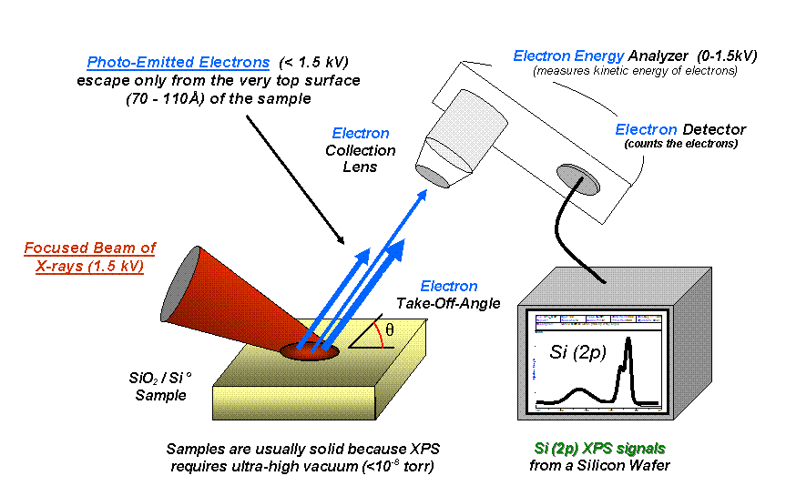
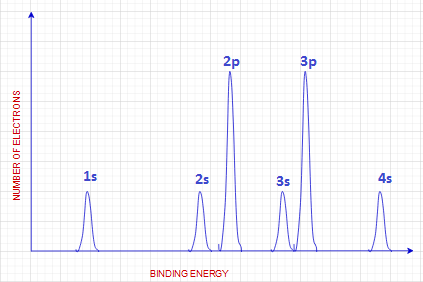

Processes

** Photoelectron Spectroscopy** Photoelectron spectroscopy is a technique that measures the kinetic energy of electrons emitted from a material when it is irradiated with ultraviolet or X-ray radiation.
How it works
- Irradiation: A sample is irradiated with photons (UV or X-rays) with known energy.
- Photoionization: The photons interact with electrons in the sample, causing them to be ejected (photoionization).
- Energy Analysis: The kinetic energy of the emitted electrons is measured using an electron energy analyzer.
Photoelectron spectroscopy provides information about the electronic structure of the material, including:
- Element Identification: By identifying the core-level binding energies of electrons, it can determine the elemental composition of the sample.
How to read a PES Graph

- A filled S/P/D/F shell will emit the same amount of energy every time
- The peak will go up the same height
- If it is not filled, it will only go up part-way
- This one, for example, shows 3 full S shell peaks, meaning it is a $$1s^2 2s^2 2p^6 3s^2 3p^6 4s^2$$ -